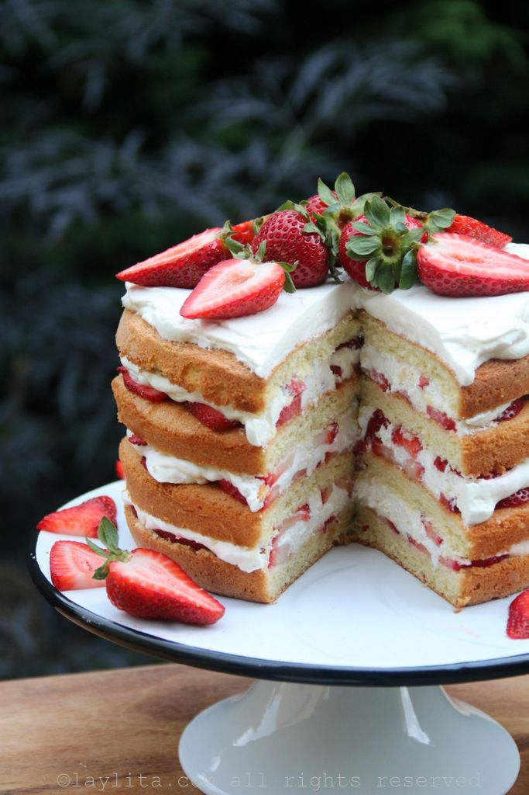

Recetas

Pastel de Fresa

Ingredientes
Para el bizcocho genovés de vainilla:
6 huevos, a temperatura ambiente (para mejores resultados déjelos remojar en agua caliente durante unos 10 minutos)
¾ taza de azúcar
1 cucharadita de esencia de vainilla
2 cucharaditas de ralladura de limón
1 taza de harina (regular)
Para las capas de fresas con crema:
2 ½ tazas a 3 tazas de crema de leche o nata liquida para montar, ajuste de acuerdo al grosor que desee para las capas de crema
5-6 cucharadas de miel de abeja, ajuste al gusto.
2 libras de fresas o frutillas maduras, lavadas y en rodajas, reserva aproximadamente unas 5 a 10 de las más pequeñas y bonitas (con las hojas) para decorar la parte superior de la torta.
Preparación:
Para el bizcocho de vainilla:
1. Pre-caliente el horno a 350F.
2. Engrase 2 moldes redondos para pasteles redondos (de 8 pulgadas/20 cm), y ponga una base de papel enmantecado en el fondo de cada molde.
3. Combine los huevos, el azúcar, la vainilla y la ralladura de limón en un tazón grande. Use una batidora eléctrica para batir hasta que se obtenga la mezcla se haya triplicado en volumen y este bien cremosa y con un color amarillo pálido, aproximadamente 10 minutos.
4. Cierna la harina, y utilice una cuchara de madera o metal para agregar suavemente la harina cernida a la mezcla de los huevos batidos. Para mejores resultados agregue la harina de poquito a poco y haga movimientos delicados y envolventes con la cuchara.
5. Vierta la masa del pastel o bizcocho, en cantidades iguales, en los dos moldes. Luego golpee suavemente o deje caer (desde una altura baja) a los moldes en la mesa para eliminar burbujas grandes de aire en el pastel.
6. Hornee los bizcochos en el horno precalentado durante unos 25 a 30 minutos o hasta que los pasteles estén dorados y esponjoso. Los bordes de los bizcochos empezaran a separarse de su respectivo molde.
7. Desmolde los pasteles y déjelos enfriar completamente. Justo antes de montar el pastel de fresas con crema, coloque cada bizcocho en una superficie plana y usar un cuchillo largo serrado o de serrucho para cortarlos por la mitad en capas horizontales.
8. Ponga la crema o nata liquida para montar en un tazón grande. Agregue la miel de abeja, la vainilla y la ralladura de limón. Mezcle ligeramente y pruebe para verificar si el dulzor es de su agrado y ajuste si es necesario. Use una batidora eléctrica para batir la crema hasta que la crema tenga una consistencia espesa y se formen picos tiesos. Refrigere la crema batida durante unos 30 minutos antes de usarla.